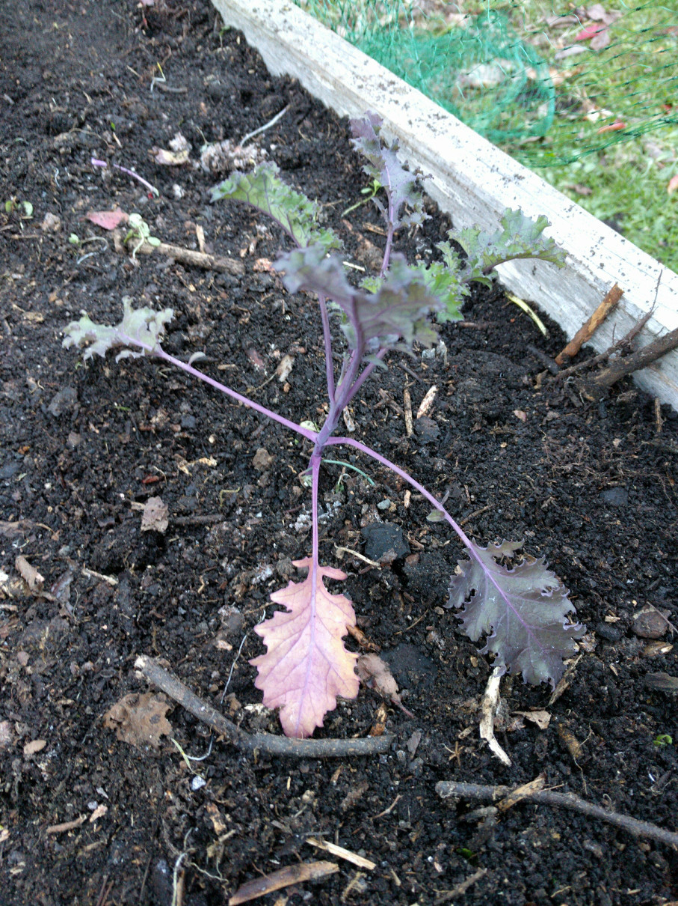

Good Noms
Info From Tag
A member of the cabbage family which can be finely chopped and eaten cooked, or raw in salads.
- POSITION: Full sun
- PLANT: 35cm apart
- WATER: Water regularly
- SOIL: Well drained soil
- HANDY TIP: Kale is a highly nutritious plant that has many vitamins
